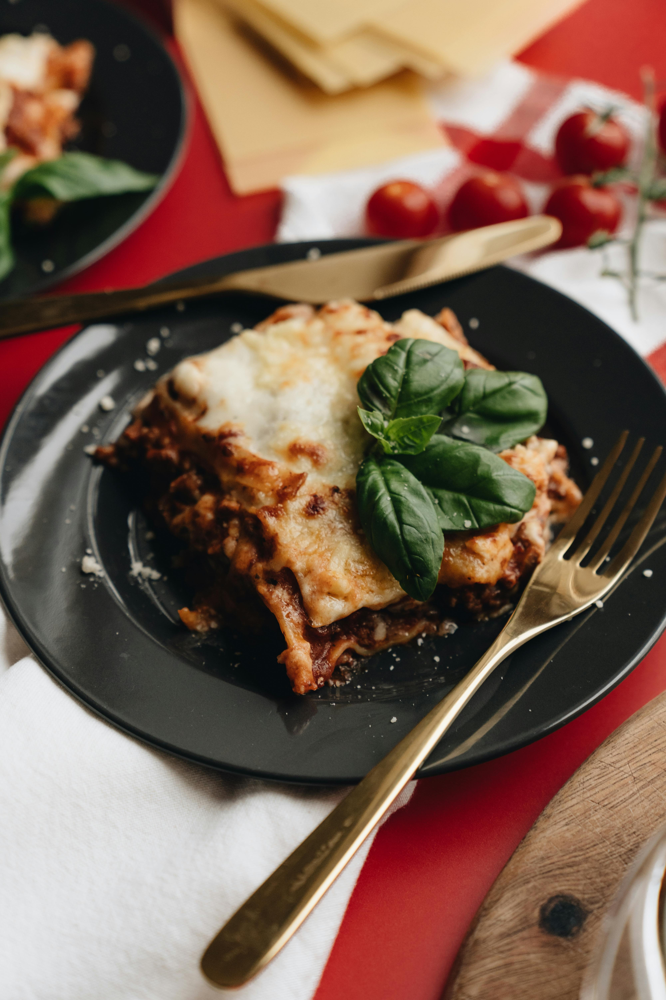

Home
Lasagna recipe

delicious italian pasta
Layers of flat pasta sheets, rich meat ragù, béchamel sauce, and Parmesan, baked low and slow until golden and bubbling on top.
Ingredients
Steps
Make ragù: Sauté 1 pieces onion & garlic, add 17.9 ounces ground beef & pork and brown. Add 2 tablespoons tomato paste and 14.3 ounces crushed tomatoes. Simmer 30 minutes
Make béchamel: Melt 1.4 ounces butter, whisk in 1.4 ounces flour, then gradually add 2.1 cups whole milk. Stir until thick.
Layer: In a baking dish, layer ragù, 10.7 ounces lasagna sheets, and béchamel. Repeat, finishing with béchamel
Bake: Top with 2.9 ounces Parmesan, grated. Bake at 180°C for 40 minutes,
until golden. Rest 10 min before serving.